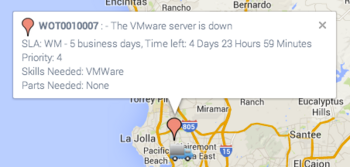
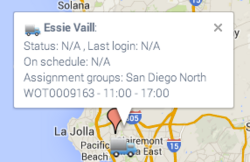
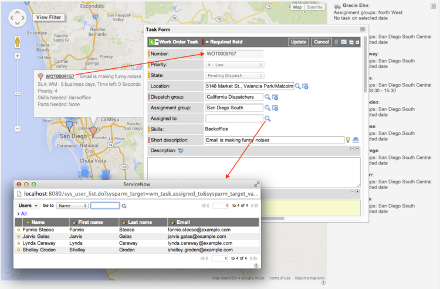
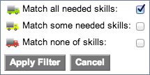

Using the Dispatch Map
| |
Note: This article applies to Fuji and earlier releases. For more current information, see Dispatch Map at http://docs.servicenow.com
The ServiceNow Wiki is no longer being updated. Visit http://docs.servicenow.com for the latest product documentation. |
Contents
1 Overview
The work management dispatch map uses geolocation data to show tasks and agents in the field. Users with the wm_dispatcher role or the dispatcher combination role can use the dispatch map to schedule and assign work order tasks. When the dispatch map opens, the view centers on the logged in user's location, as defined on the user record. Icons for tasks and agents provide access to scheduling information and links to related records.
An administrator must activate the Work Management Geolocation plugin to enable the dispatch map, which is available starting with the Eureka release.
| |
Note: In the Fuji release, Work Management was renamed Field Service Management. If you are using a version prior to Fuji, refer to the Work Management - Versions Prior to Fuji pages. |
2 Agent Starting Position
The system calculates the starting location of each agent from that agent's geographical coordinates. If geolocation is enabled, the agent's latitude and longitude are determined by information returned from the agent's mobile device. If geolocation is not enabled the agent's default location is the home office. ServiceNow uses these criteria to locate work agents at the beginning of the day:
- If the agent is routed for a future date, the system calculates the route from the home office.
- If ServiceNow has current geolocation data for the agent at the start of the day, the system uses those geographical coordinates instead of the home office as the starting point for the agent's routing.
- If ServiceNow does not have current geolocation data for an agent at the start of the day or if geolocation tracking is disabled, the system uses the home office as the starting point.
- If the agent has a task that is still Work in Progress at the start of the current day, the system starts the agent's route for that day at the location of the unfinished task. The start time is set to the time of the scheduled completion of the unfinished task or the current time, whichever is later.
2.1 Geolocation Tracking
In the default view of the User form, select the Geolocation tracked check box to enable agent location tracking. When ServiceNow tracks an agent, the system updates the geographic coordinates whenever the agent loads a record on the Task [task] table or on a table that extends Task. After the initial update, the system continues to update the agent's geographic coordinates at recurring intervals if the agent does not close or reload the record. Administrators can set the length of this interval by editing a system property called Minimum amount of time between updating the user's location (in seconds). The default value for the geolocation update interval is 300 seconds, or 5 minutes. To access this property, navigate to Geolocation > Administration > Geolocation Properties.
| |
Note: The system can update geographic coordinates only for users who have location services enabled in their browsers. Even users who have the Geolocation tracked check box selected may be prompted by their browsers to share or withhold their location. |
3 Agent Starting Time
A property called Default start time for all work agents when no schedule is set, formatted as 08:00 determines an agent's start time for the day, unless that agent has another schedule or a task continued from the previous day. The default value for this property in ServiceNow is 08:00. To edit the default start time, navigate to Work Management > Administration > Work Management Properties.
4 Agent Status
ServiceNow determines an agent's work and schedule status throughout the work day.
4.1 Work Status
To evaluate the agent's work status, the system checks the action the agent takes when updating a task and interprets it as one of these statuses:
- On route
- On site
- On break
- Off work
For example, when the agent starts travel to a task, the system considers the agent's status as On route. When the agent starts to work on a task, ServiceNow updates the agent's status to On site. When an agent closes or cancels a task, the system resets the agent's status to None in preparation for travel to the next task.
You can view an agent's work status in the information box that opens when you click the agent's icon in the dispatch map or in an agent's user record. To display agent work status in the user record, navigate to User Administration > Users and configure the User form to show the Work agent status field. This action puts the status field on all user records.
4.2 Schedule Status
You can view an agent's schedule status in the information box that opens when you click the agent's icon in the dispatch map or in an agent's user record. A green icon indicates that the agent is ahead of schedule. If the agent is behind schedule, the icon in the map appears in red. Possible statuses are:
- Ahead of schedule
- Behind schedule, between 30 to 60 minutes
- Behind schedule, less than 30 minutes
- Behind schedule, more that an hour
- On time
To display the agent schedule status in the user lists and records, navigate to User Administration > Users and configure the User list and form to show the On schedule field. This action puts the schedule status field on all user records.
{kind=link}
Tasks that are behind schedule appear highlighted in lists and forms.
- Red: Tasks that are more than one hour behind.
- Orange: Tasks that are between 30 and 60 minutes behind.
- Yellow: Tasks that are only 30 minutes behind.
5 Dispatcher View
The icons in the dispatch map mark the location of tasks and agents in your area and serve as access points to various records. You can manage tasks and routing from the map, filter the view, and determine at a glance what agents are on time or behind schedule.
To access the dispatch map, navigate to Work Management > Dispatching > My Dispatch Map. Users with the wm_dispatcher, wm_admin, or wm_initiator_qualifier_dispatcher role can manage tasks and agents in the map.
5.1 Map Symbols
The dispatch map opens in the geographical area containing the agents from any assignment group that is part of your dispatch group. These icons indicate the location of agents and tasks:
- Agent on schedule: Current location of an agent selected in the filter. Agents with this icon are on time or ahead of schedule.
- Agent behind less than 30 minutes: Current location of an agent who is less than 30 minutes behind schedule.
- Agent behind less than 60 minutes: Current location of an agent who is between 30 and 60 minutes behind schedule.
- Agent behind more than 60 minutes: Current location of an agent who is at least one hour behind schedule.
- Agent off the schedule: Last known location of an agent who is not currently on the schedule or working on any tasks.
- Unassigned: Unassigned tasks that are awaiting dispatch.
- Assigned: Assigned tasks that have not yet been accepted.
- Accepted: Tasks that have been accepted or tasks that are in progress.
- Multiple tasks: Multiple active tasks clustered by proximity.
- Multiple agents: Multiple agents clustered by proximity.
- Agent/Tasks: Combination of agents and tasks clustered by proximity.
{kind=link}
{kind=link}
{kind=link}
{kind=link}
{kind=link}
{kind=link}
{kind=link}
{kind=link}
{kind=link}
{kind=link}
{kind=link}
{kind=link}
5.1.1 Clusters
ServiceNow gathers tasks and agents together by proximity into clusters as you increase the altitude of the map view. Tasks are gathered into red clusters, and agents are gathered into blue clusters. Counters in each cluster icon indicate the number of agents or tasks rolled up as the perspective changes.
When multiple agents and tasks are in one location, they can be gathered into purple clusters. This icon is created by a system property called Merge the task and agent markers on the geolocation maps with a new purple marker. This property is found in Work Management > Administration > Work Management Properties and is disabled by default.
{kind=link}
{kind=link}
5.2 Viewing Task Information
To view information about a task, click the icon. A pop-up window shows the task number, the name of the agent if one is assigned to the task, and the task description. By default, the system closes an open pop-up window before opening another. To allow multiple pop-up windows to remain open, navigate to System Properties > Google Maps and edit the If true, automatically closes a dispatch map information window before opening a new one property.
The following information is included in an information pop-up window:
- SLA: Time remaining on an SLA, if one is affected by this task.
- Priority: Task priority by number, 1 being the highest and 5 the lowest.
- Skills Needed: Skills needed to perform the work.
- Parts Needed: Parts needed to perform the work.
{kind=link}
If multiple tasks exist in the same location, click the cluster icon to display the list of tasks by status. Click any entry to display summaries for all the tasks in a pane beside the map. You can access individual task records from this list.
{kind=link}
Click the task number link to display the record in a pop-up. You can reassign a task to another agent using these fields:
- Dispatch group
- Assignment group
- Assigned to
| |
Note: If a task has transfer orders that have shipped and are in transit, ServiceNow displays a warning and blocks any attempt to reassign the task or to clear the Assigned to field. If the transfer orders have been received or delivered, reassignment is permitted, and the assets are moved to a state of In Stock / Available. |
For an unassigned task, click Auto-Dispatch under Related Links to let the system dispatch the task automatically. You can edit the task schedule in this record or create a task window.
{kind=link}
5.3 Viewing Agent Information
To view details about an agent at a particular location, click the agent icon. A pop-up window shows the agent's schedule and these additional details:
- Status: Possible values are On route, On site, On break, Off work.
- Last login: Time the agent last logged in to the instance. This field is updated automatically each time a user with geolocation tracking enabled views a task.
- On schedule: Possible values are On time, Behind schedule, and Ahead. The icon for an agent who is behind schedule appears in red on the map. The system highlights in red the name of the agent who is behind schedule in the Map View of all user records and lists.
- Assignment groups: All assignment groups this agent belongs to.
Click the agent's name to open the user record. Only the Location field can be edited in this record. Click a task number in the schedule list to display the task record. Tasks that are behind schedule are marked in red.
If more than one agent is in a location, the map gathers them together in a blue cluster icon. Click the cluster to display a summary pop-up window showing the agents at that location by dispatch group. Click any link in this list to display a detailed list of agents in a panel beside the map. You can open user records and tasks using the links in this list.
{kind=link}
5.4 Filtering the Map
To change the items visible in the map, click View Filter.
These filters are available:
- Show unassigned tasks: All unassigned tasks are displayed by default. Clear the check box to hide unassigned tasks.
- Show assigned tasks: All assigned tasks are displayed by default. Clear the check box to hide assigned tasks.
- On: The current date is selected by default. You can change the date to view tasks for that day.
- Show my agent's work group: All assignment groups are selected by default. You can select any assignment group in your dispatch group.
- Show agent: All agents are displayed by default. When you select a specific assignment group, the choice list for agents shows only the agents in that assignment group.
{kind=link}
Click Apply Filter to apply your changes to the map. The view displays all tasks assigned to the agent selected in the filter. The icons are all numbered to show the sequence of the agent's route. Click Apply auto-routing to let ServiceNow decide the most efficient route to the agent's tasks.
6 Auto-Routing
Auto-routing reorders an agent's tasks for the day as efficiently as possible using either geolocation or straight line estimation. The system uses work management properties to configure the system's estimates by adjusting:
- Travel time between tasks.
- Task windows that are either fixed or flexible.
- Task dependencies that require the completion of a prerequisite task.
- Toll road routing that is either enabled or disabled.
- Rush hour and other specified time buffers.
6.1 Google Maps API for Business
Geolocation uses Google Maps API for Business to calculate the most efficient route between tasks, using real-time positioning. To use geolocation, you must provide a Google Key and client ID.
6.2 Straight Line Estimates
If you do not have Google Maps API for Business, ServiceNow uses built-in time and distance estimates based on latitude and longitude to determine the best route for the agent.
6.3 Routing Restrictions
These general restrictions apply to auto-routing:
- If you attempt to auto-route more than 200 tasks, routing fails and the system displays a message describing the error.
- If a task cannot be auto-routed because of an impractical or missing location, or because the task window cannot be scheduled, ServiceNow displays a message advising that the unroutable task was not included in the new sequence.
- Dependent tasks cannot be auto-routed if the routing would produce a circular relationship.
| |
Note: The system returns any unroutable task to the Pending Dispatch state. |
7 Assigning Tasks
You can assign agents to unassigned tasks using the dispatch map.
- Navigate to Work Management > Dispatching > My Dispatch Map.
- Select a filter view for the day and the assignment group you want to see.
- Click an unassigned task in the map, marked by a red icon.
- A pop-up window shows the unassigned task and a description.
- 
- Click the icons of nearby agents and examine their schedules.
- An agent's schedule shows each assigned task and its work duration. The tasks appear in the sequence defined manually by the dispatcher or by the agent using the auto-routing feature.
- 
- Locate an appropriate agent with available time to perform the unassigned task.
- Click the number of the unassigned task to display the record in a pop-up on the map.
- Select the available agent in the Assigned to field.
- Only agents from the current assignment group are available for selection.
- 
- Click Update.
- The red icon on the map turns blue, indicating that the task is assigned but not yet accepted by the agent. The icon turns green when the agent accepts the task.
{kind=link}
{kind=link}
{kind=link}
{kind=link}
{kind=link}
8 Assigning Single Tasks
In some cases, you might need to dispatch an urgent task or reassign one to an alternate agent if the assigned agent is delayed or otherwise unable to perform the task. Only users with the wm_dispatcher or wm_initiator_qualifier_dispatcher role can display their tasks on the dispatch map directly from a task record and see the available agents nearby who have the skills to perform the task. A task cannot be displayed on the dispatch map without a location that has latitude and longitude defined. A task assigned in this manner can be accepted or rejected by the agent.
- Navigate to Work Management > Dispatching > My Dispatch Queue.
- Open the task you want to dispatch or reassign.
- Click the View Task on Map.
- This button is visible only if the task contains a location with a defined latitude and longitude and, starting with the Fuji release, the task is not in the Draft, Closed Complete, Closed Incomplete, or Cancelled state. The map that appears displays a red task icon with a black spot for the task, and shows icons for all nearby agents.
- Click View Filter.
- Select a skill level for the agents to display in the map.
- The default filter selects all agents in the vicinity. The icons in the map indicate agents with these skill combinations:
- Match all needed skills
- Match some needed skills
- Match none of skills
- 
- The default filter selects all agents in the vicinity. The icons in the map indicate agents with these skill combinations:
- Click Apply Filter.
- ServiceNow displays the agents on the map who match the skills selection.
- Click an agent icon to show the agent's name, skills, and schedule.
- Click the icon beside the agent's name to assign the task to that agent.
{kind=link}
{kind=link}